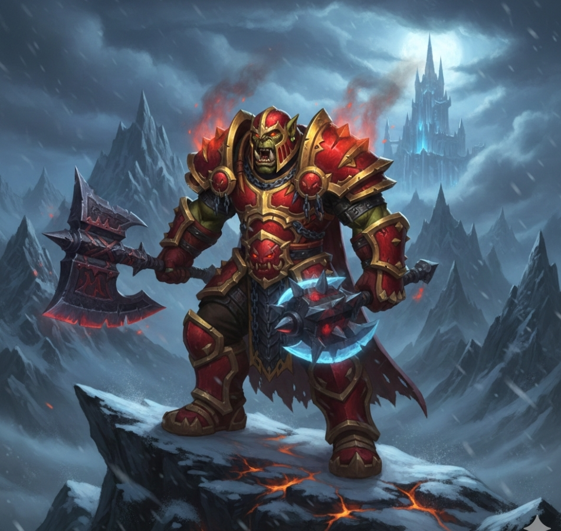

Guerrero Armas
Guía PvP 3.3.5
📊 Estadísticas prioritarias (PvP)
- Temple/Resiliencia – Reduce críticos y daño recibido
- Golpe – Cap de 5 % para reducir misses
- Penetración de Armadura – Segundo stat ofensivo principal
- Crítico – Para daño y procs
- Fuerza – Aumenta el daño general
- Vigor – Más supervivencia
🔧 Talentos & Glifos
- Talentos: Build PvP con Mortal Strike, Overpower y mejoras de combate
- Glifo Mayor: Mortal Strike (+10 % daño), Rending y Overpower
- Glifo Menor: Bloodrage, Carga y Ira de Batalla
✨ Encantamientos recomendados (PvP)
- Cabeza: Arcanum of Torment
- Hombros: Greater Inscription of the Axe
- Capa: Major Agility
- Pecho: Powerful Stats
- Brazales: Greater Assault
- Guantes: Crusher
- Piernas: Icescale Leg Armor
- Pies: Greater Assault
- Arma: Berserking o Executioner
💎 Gemas (PvP)
- Meta: Eternal Earthsiege Diamond o Swift Skyflare Diamond
- Rojas: Rubí Cardeno Fracturado (+Penetración) o Rubí Cardeno Fuerte (+Fuerza)
- Amarillas: Ámbar Rígido del Rey (+Golpe) o Ámbar Místico (+Resiliencia)
- Azules: Zircón Majestuoso Sólido (+Vigor)
⚔️ Habilidades PvP clave
- Mortal Strike – Principal fuente de daño y anti-heal.
- Overpower – Proc prioritario con parry.
- Charge – Engage / peel.
- Hamstring – Kite y control.
- Rend – DoT en peleas largas.
- Berserker Rage – Anti-fear/CC.
- Bladestorm y Shockwave – Burst/peel en combos.
🔁 Rotación básica PvP
- Inicia con Charge.
- Mantén Rend en el objetivo.
- Usa Mortal Strike como principal ofensiva.
- Proc de Overpower cuando esté disponible.
- Usa defensivos/interrupts según situación.
- En burst, encadena Bladestorm y Shockwave.
💡 Consejos PvP
- Ajusta build y gemas para balancear daño y resiliencia.
- Usa macros de stance switching para movilidad y interrupts.
- Prioriza objetivos frágiles o healer según situación.